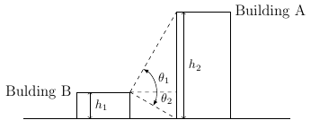
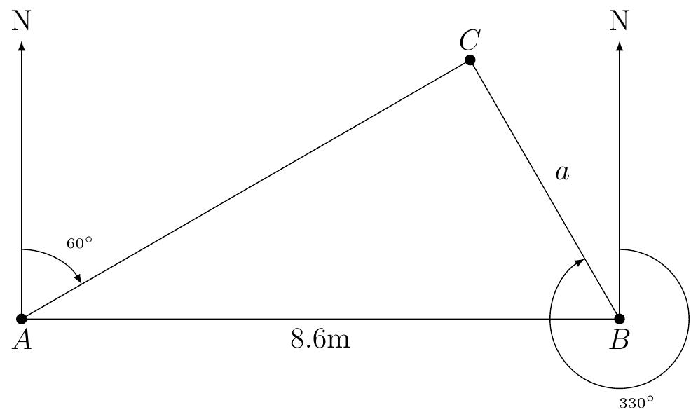
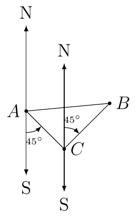
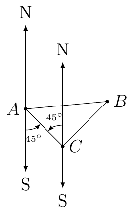
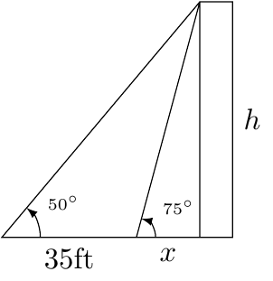

Section 2.5
Example 13
Building B is shorter than Building A. Standing on top of Building B (and closest corner to Building B) there is an angle of elevation of \(60^{\circ}\) from the top of Building B to the top of Building A. There is an angle of depression from the top of Building B to the bottom of Building A of \(30^{\circ}\). If Building A is \(100\) meters tall then how tall is Building B?
Solution:
First, we will draw a picture.

We want to solve for \(h_1\).
We know that the difference between the heights of the two buildings is \(\Delta h=h_{2}-h_{1}\) and it’s positive because \(h_{2}>h_{1}\). This means that \(h_{1}=h_{2}-\Delta h\) where \(h_{2}=100\) which is given. Let \(\Delta x\) be the distance between the two building on the horizontal axis. Then we know
Since the distance between the two building is the same we have
Since \(h_{2}=100\), \(\theta_{1}=60^{\circ}\), and \(\theta_{2}=30^{\circ}\), we first want to evaluate \(\cot(60^{\circ})\) and \(\cot(30^{\circ})\). Recall
Therefore the height of Building B is 25 meters.
Example 14
Radar station A and B are on an east-west line, 8.6 km apart. Station A detects a plan at \(C\), on bearing of \(60^{\circ}\). Station B simultaneously detect the same plane, on a bearing of \(330^{\circ}\). Find the distance from B to C.
Solution:
First, we will draw a picture.

From the given information we know that \(\angle CAB=30^{\circ}\) and \(\angle CBA=330-270=60^{\circ}\). Therefore, \(\triangle ABC\) is a 30-60-90 right triangle.
We can then step up the following equation and solve for \(a\)
Example 15
A ship leaves port and sails on a bearing of S\(45^{\circ}\)E for 2.5 hours. It then turns and sails on a bearing of N\(45^{\circ}\)E for 3 hours. If the ship’s rate is 18 knots (nautical miles per hour), find the distance that the ship is from port.
Solution:
First, we will draw a picture of the information.

Second, we must show that \(\triangle ABC\) is a right triangle. By alternating interior angles we know the following:

With the previous image we then now that \(\triangle ABC\) is a right triangle since \(45^{\circ}+45^{\circ}=90^{\circ}\).
Next, we will use the information to find the length of \(AC\) and \(BC\). We want to find \(AB\). By Pythagorean’s Theorem we know
We are given that the first part of the travel is 2.5 hours at 18 knots. Therefore,
Similarly, we know the second part is 3 hours at 18 knots. Therefore,
Therefore,
Example 16
Bob needs to find the height of a building. From a given point on the ground, he finds that the angle of elevation to the top of the building is \(75^{\circ}\). He then walks back 35 feet. From the second point, the angle of elevation of the top of the building is \(50^{\circ}\). Find the height of the building in exact form.
Solution:
First, we will draw a picture:

We want to solve for \(h\). We know
Solving for \(h\) for both equations we have
Next, setting the right hand side of the two equations equal to each other we have:
Solve for \(x\) we have
Since \(h=x\tan(75^{\circ})\) we have
Therefore, the exact height of the building is
and the approximate height is 61.2798 feet.